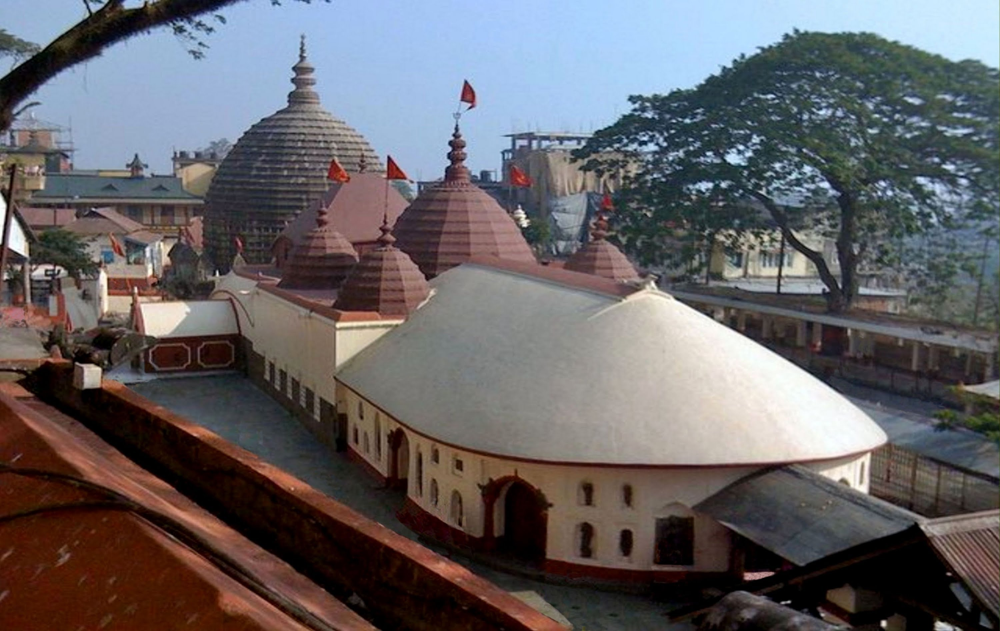
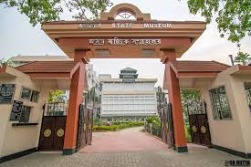

 The Kamakhya Temple also Kamrup-Kamakhya[2] is a Hindu temple dedicated to the mother goddess Kamakhya. It is one of the oldest of the 51 Shakti Pithas.[4] Situated on the Nilachal Hill in western part of Guwahati city in Assam, India, it is the main temple in a complex of individual temples dedicated to the ten Mahavidyas GUWHATI
 The Assam State Museum is located in the southern end of Dighali Pukhuri tank which is in the heart of Guwahati city, Assam. The Museum was established by the Kamarupa Anusandhan Samiti (Assam Research Society) in 1940.